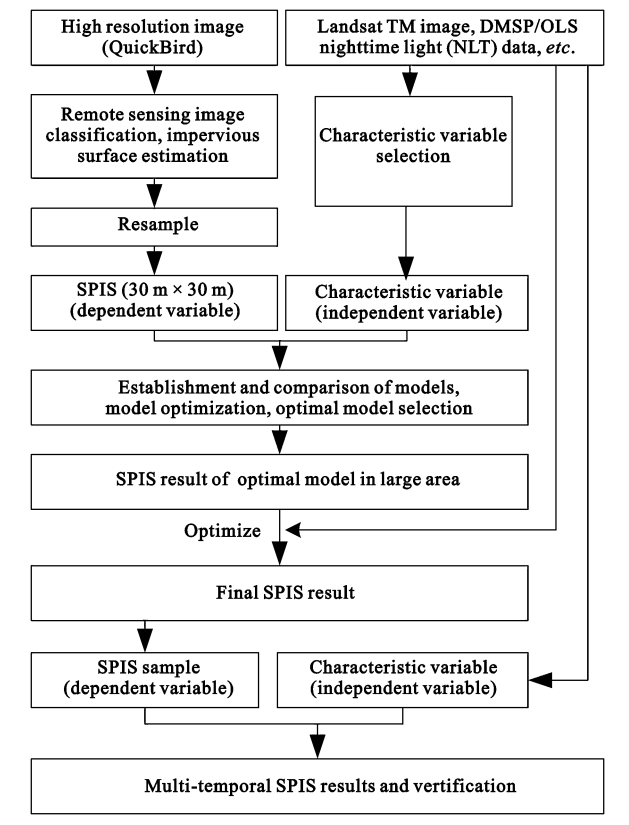
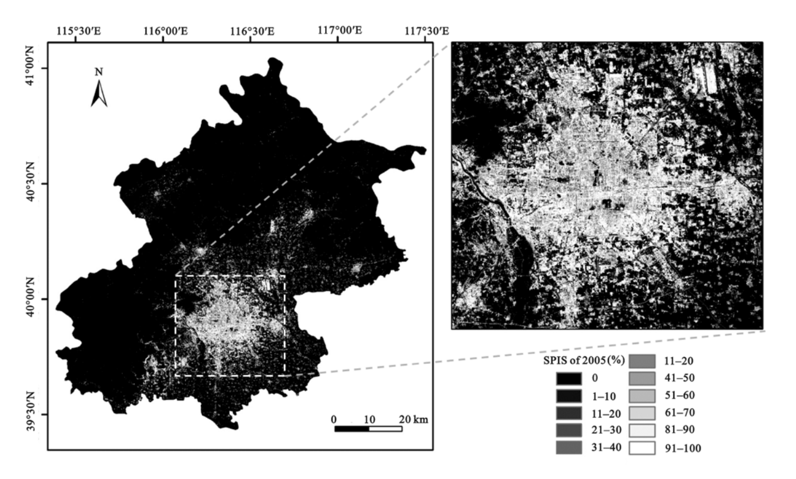

6 Week8—Classification1
6.1 Summary
This week’s study of decision trees, I was also learned in another course. It is mainly used to solve classification and regression problems. This week’s lecture introduced the topic through some environmental problems (which was very interesting because I want to write about it for my dissertation) and then talked about what classification and regression trees (CART) are.
Principle：The CART model constructs a decision tree by recursively partitioning the dataset into smaller subsets while creating a decision node for each subset.
Difference：
Classification trees are used for the prediction of discrete response variables. They create partitions by maximizing the impurity between different classes, and commonly used impurity measures are the Gini index or entropy.
Regression trees are used for the prediction of continuous response variables. They create partitions by minimizing the total squared error in each partition (i.e., the sum of the squares of the differences between the values at each node and the actual values at all points in the node).
When a decision tree is overfitted, the problem needs to be mitigated by pruning, setting a maximum depth, or requiring a minimum number of samples contained in a node.
Random Forest：Improve overall prediction accuracy by combining predictions from multiple decision trees.
Random forests then solve the overfitting problem of the decision trees just mentioned, with random feature selection and self-sampling, random forests are less prone to overfitting than individual decision trees.
Image classification：Aims to classify pixels in remote sensing images into different categories to identify and analyze different features of the ground surface, such as vegetation, water bodies, roads, buildings, and so on.
Unsupervised does not require large amounts of training data to be collected and labeled beforehand, and is suitable for situations where labeled data is lacking or costly to obtain.
Clustering algorithms (e.g., K-means) are applied to automatically group pixels into classes based on their spectral features. These algorithms attempt to cluster pixels with similar features together to form class clusters.
Supervised evaluates the accuracy of the classification by comparing the classification results to a set of independent validation samples of known class.
Maximum Likelihood Classification (MLC) is a widely used supervised classification technique. Classification is performed by estimating the probability that a pixel belongs to each predefined category.
Support Vector Machine (SVM) is used to solve classification and regression problems.SVM aims to find optimal boundaries (called hyperplanes) between different classes to maximize the edges between different classes. This method is particularly effective in high-dimensional spaces and is therefore well suited for processing multi-band remote sensing data.
6.2 Application
The percentage of sub-pixel impervious area (SPIS) is the proportion of impervious surface area in a pixel and is an important indicator of the level of urbanization(Hu et al., 2017). The algorithm based on decision trees can predict the optimal model of SPIS.
How processing:
Based on this flowchart, the SPIS estimation accuracy of this study is high and fitting the effect.
The figure below is an image formed by remote sensing based on the decision tree criterion. This figure can clearly see the ratio of SPIS.

In this study, after some data processing and analysis, the research questions of this article can be well proved. The contribution of decision trees in this study is very significant.
6.3 Reflection
The application of decision trees takes the difficulty of remote sensing learning to a new level. Based on the algorithm, we can improve the accuracy of our remote sensing research. This is actually similar to what we have learned before. One is to improve the data accuracy, and this is to directly improve the visualization accuracy. Although I think it is very useful for my dissertation, I don’t know if I can do it because it is really difficult, especially the data construction part. I feel that the more I study, the more I feel that I still have a lot to improve, and I don’t know where my future will go. I hope I can cheer up and work harder.
6.4 Reference
Hu, D., Chen, S., Qiao, K. and Cao, S. (2017). ‘Integrating CART algorithm and multi-source remote sensing data to estimate sub-pixel impervious surface coverage: a case study from Beijing Municipality, China’. Chinese Geographical Science, 27 (4), pp. 614–625. doi: 10.1007/s11769-017-0882-x.